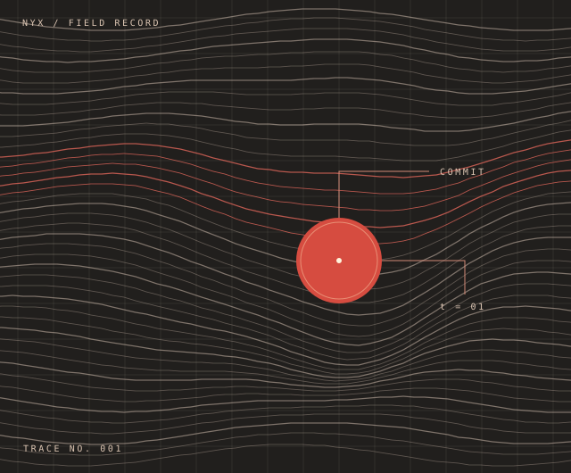

SYSTEMS JOURNAL
系统，
拆开来看。
关于分布式系统、存储与 AI 基础设施。顺着一次请求往下看，直到找到真正决定结果的那一层。

01 / ARTICLES
最新文章
02 / READING DESK
技术雷达
13 个外部订阅源，147 条快照链接。读原文，不追无穷无尽的消息流。
SYSTEMS JOURNAL
关于分布式系统、存储与 AI 基础设施。顺着一次请求往下看，直到找到真正决定结果的那一层。

01 / ARTICLES
02 / READING DESK
13 个外部订阅源，147 条快照链接。读原文，不追无穷无尽的消息流。